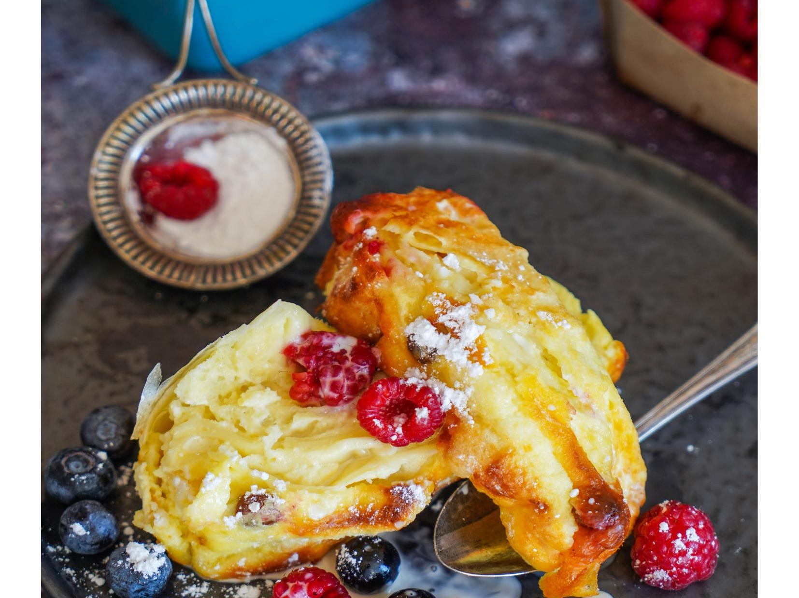

Представьте себе тонкие молочные блинчики. Представили? Теперь представьте себе нежную творожную запеканку с изюмом, вымоченным в роме. Готово? А теперь закройте глаза, глубокий вдох, выдох… Соедините оба блюда в одном, полив соусом из яиц, сметаны и сливок. Не забудьте мысленно поставить в духовку и запечь до румяной корочки... Вот это и будут австрийские topfenpalatschinken. А если по-русски – умопомрачительная запеканка из блинов и творога.